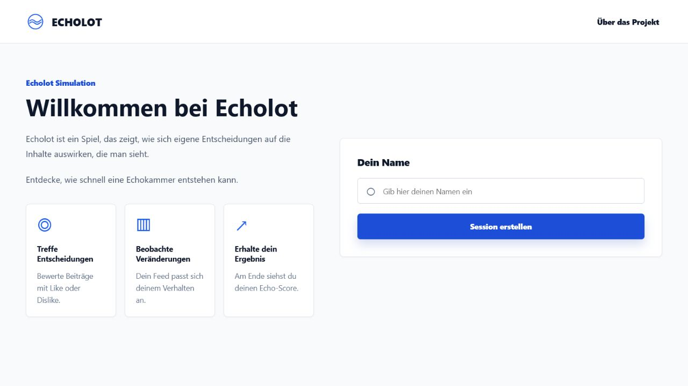

01
Full-Stack · Software-Entwicklungspraktikum
Echolot
Echolot ist ein interaktives Social-Media-Spiel, das die Entstehung von Filterblasen und Echokammern erlebbar macht. Spieler:innen bewerten Beiträge in einem simulierten Feed mit Like oder Dislike. Anhand dieser Entscheidungen verändert sich der Feed im Verlauf des Spiels und zeigt zunehmend passende Inhalte. In der abschließenden Auswertung erfahren die Spieler:innen, ob sich eine Echokammer entwickelt hat und wie ihr eigenes Verhalten dazu beigetragen hat. Zusätzlich erklärt die Anwendung, wie Echokammern entstehen und warum andere Meinungen dadurch weniger sichtbar werden.

Echte Anwendungsoberfläche